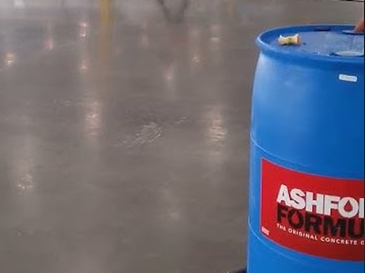

Verdichten
Ashford Formula
Der Klassiker für Industrieböden, im Neubau und im Bestand. Er dringt 3 bis 5 mm tief ein und macht die Oberfläche dauerhaft hart, dicht und staubfrei.
- Für Neubau und Bestand, Eindringtiefe 3 bis 5 mm
- Bis zu 32,5 % mehr Abriebfestigkeit (ASTM C779)
- Wasserbasiert, lösemittelfrei, 0 g/L VOC
- Farbe und Optik des Bodens bleiben erhalten